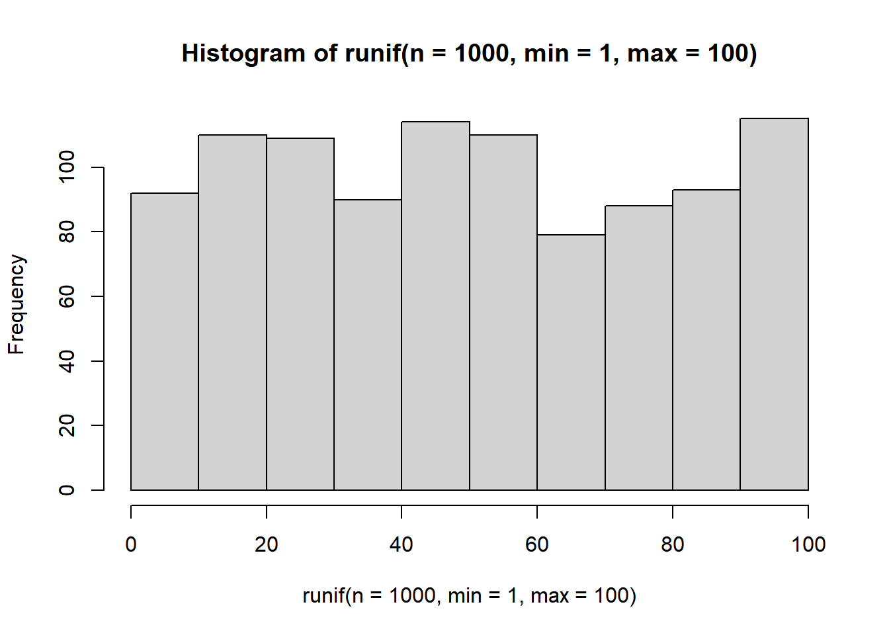
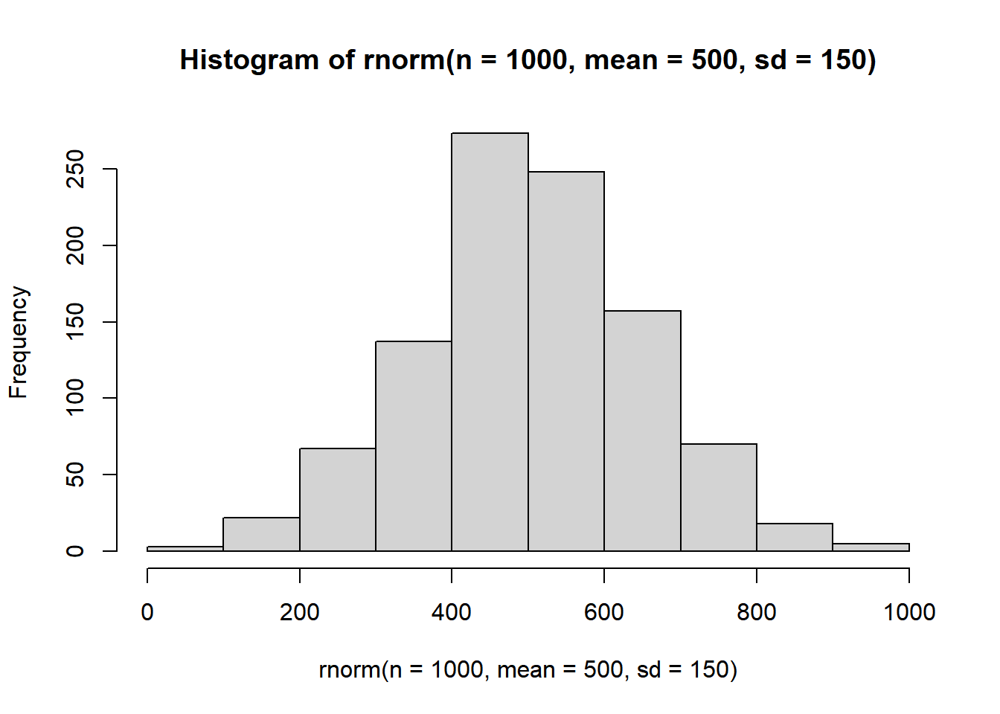
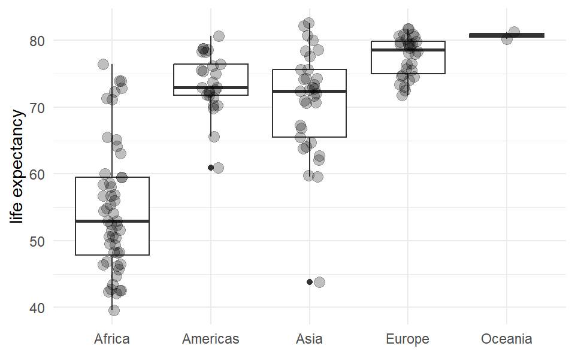
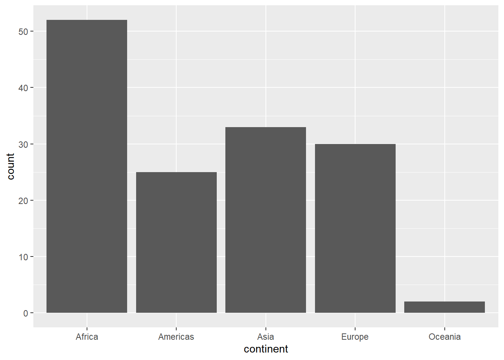
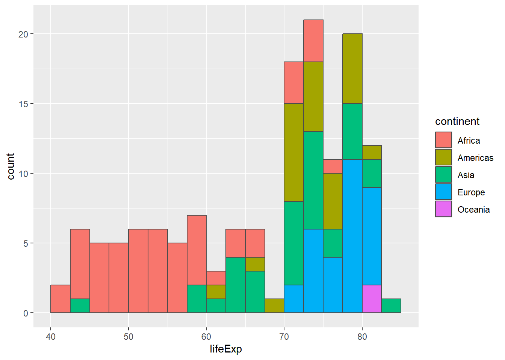
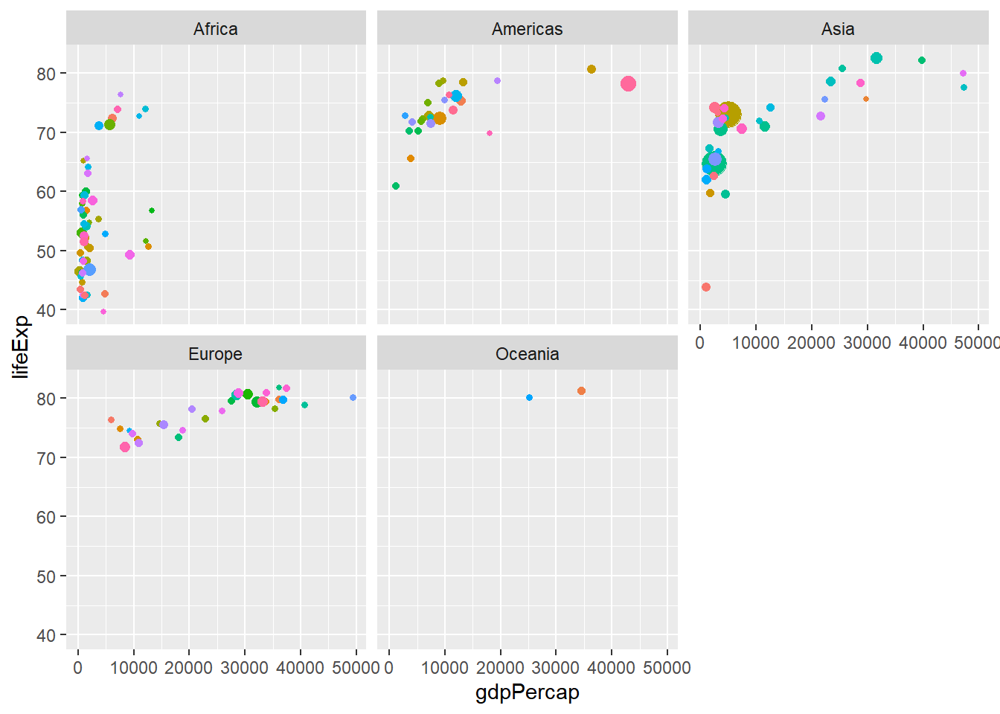
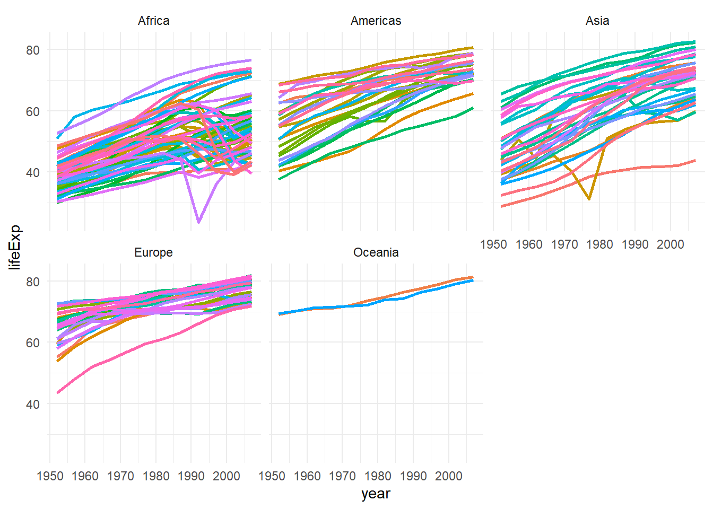
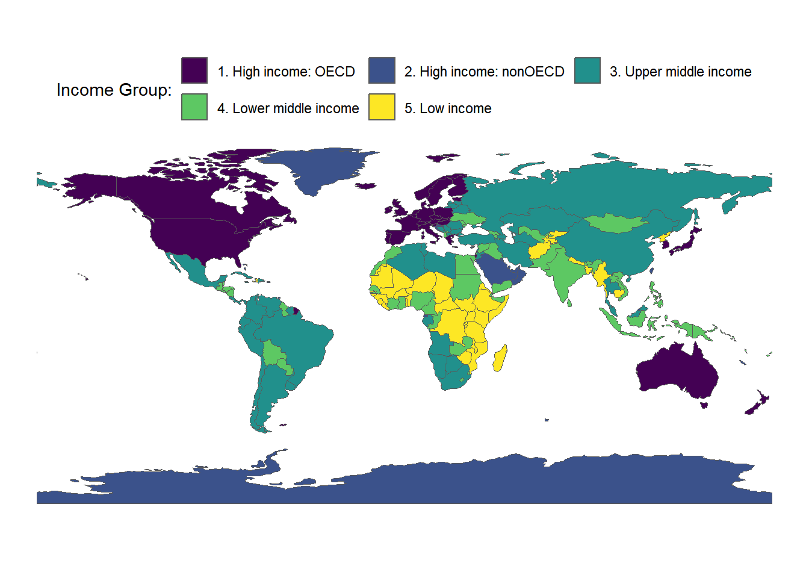
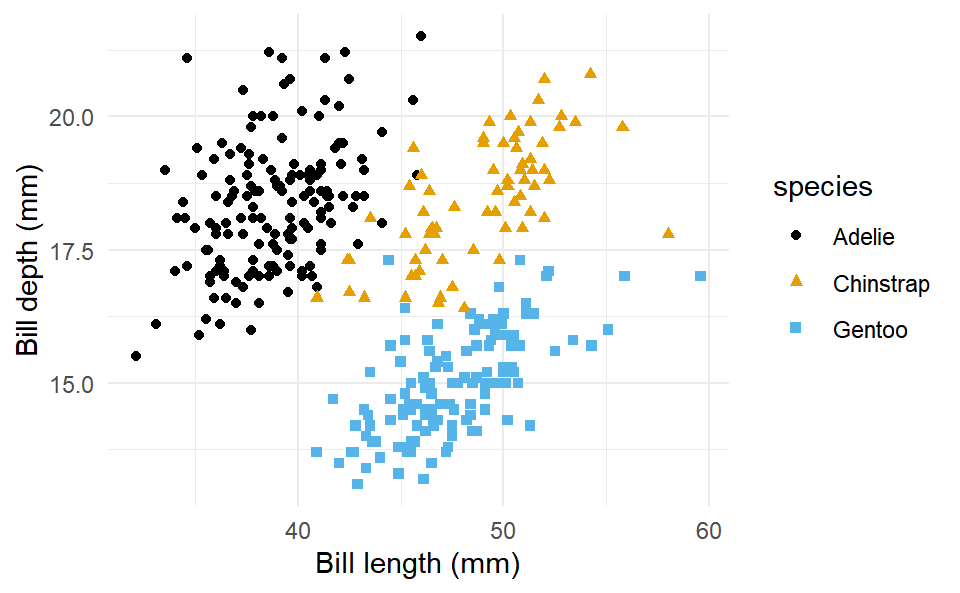

library(tidyverse)
library(ggplot2)
library(ggthemes)
library(knitr)
library(gt)
library(dplyr)
library(readr)
library(readxl)
library(sf)
library(rnaturalearth)
library(gapminder)
library(palmerpenguins)
library(nycflights13)Overview
This is a summary of the R related parts of the rbtl-fs25 lecture for the exam.
Packages
Read
new_data <- read_rds(here::here("data/existing_data.rds"))
new_data <- read_csv("data/existing_data.csv")
new_data <- read_excel("data/raw/existing_data.xlsx")Explore
head(gapminder)# A tibble: 6 × 6
country continent year lifeExp pop gdpPercap
<fct> <fct> <int> <dbl> <int> <dbl>
1 Afghanistan Asia 1952 28.8 8425333 779.
2 Afghanistan Asia 1957 30.3 9240934 821.
3 Afghanistan Asia 1962 32.0 10267083 853.
4 Afghanistan Asia 1967 34.0 11537966 836.
5 Afghanistan Asia 1972 36.1 13079460 740.
6 Afghanistan Asia 1977 38.4 14880372 786.tail(gapminder)# A tibble: 6 × 6
country continent year lifeExp pop gdpPercap
<fct> <fct> <int> <dbl> <int> <dbl>
1 Zimbabwe Africa 1982 60.4 7636524 789.
2 Zimbabwe Africa 1987 62.4 9216418 706.
3 Zimbabwe Africa 1992 60.4 10704340 693.
4 Zimbabwe Africa 1997 46.8 11404948 792.
5 Zimbabwe Africa 2002 40.0 11926563 672.
6 Zimbabwe Africa 2007 43.5 12311143 470.glimpse(gapminder)Rows: 1,704
Columns: 6
$ country <fct> "Afghanistan", "Afghanistan", "Afghanistan", "Afghanistan", …
$ continent <fct> Asia, Asia, Asia, Asia, Asia, Asia, Asia, Asia, Asia, Asia, …
$ year <int> 1952, 1957, 1962, 1967, 1972, 1977, 1982, 1987, 1992, 1997, …
$ lifeExp <dbl> 28.801, 30.332, 31.997, 34.020, 36.088, 38.438, 39.854, 40.8…
$ pop <int> 8425333, 9240934, 10267083, 11537966, 13079460, 14880372, 12…
$ gdpPercap <dbl> 779.4453, 820.8530, 853.1007, 836.1971, 739.9811, 786.1134, …str(gapminder)tibble [1,704 × 6] (S3: tbl_df/tbl/data.frame)
$ country : Factor w/ 142 levels "Afghanistan",..: 1 1 1 1 1 1 1 1 1 1 ...
$ continent: Factor w/ 5 levels "Africa","Americas",..: 3 3 3 3 3 3 3 3 3 3 ...
$ year : int [1:1704] 1952 1957 1962 1967 1972 1977 1982 1987 1992 1997 ...
$ lifeExp : num [1:1704] 28.8 30.3 32 34 36.1 ...
$ pop : int [1:1704] 8425333 9240934 10267083 11537966 13079460 14880372 12881816 13867957 16317921 22227415 ...
$ gdpPercap: num [1:1704] 779 821 853 836 740 ...nrow(gapminder)[1] 1704ncol(gapminder)[1] 6gapminder# A tibble: 1,704 × 6
country continent year lifeExp pop gdpPercap
<fct> <fct> <int> <dbl> <int> <dbl>
1 Afghanistan Asia 1952 28.8 8425333 779.
2 Afghanistan Asia 1957 30.3 9240934 821.
3 Afghanistan Asia 1962 32.0 10267083 853.
4 Afghanistan Asia 1967 34.0 11537966 836.
5 Afghanistan Asia 1972 36.1 13079460 740.
6 Afghanistan Asia 1977 38.4 14880372 786.
7 Afghanistan Asia 1982 39.9 12881816 978.
8 Afghanistan Asia 1987 40.8 13867957 852.
9 Afghanistan Asia 1992 41.7 16317921 649.
10 Afghanistan Asia 1997 41.8 22227415 635.
# ℹ 1,694 more rowsglimpse(gapminder)Rows: 1,704
Columns: 6
$ country <fct> "Afghanistan", "Afghanistan", "Afghanistan", "Afghanistan", …
$ continent <fct> Asia, Asia, Asia, Asia, Asia, Asia, Asia, Asia, Asia, Asia, …
$ year <int> 1952, 1957, 1962, 1967, 1972, 1977, 1982, 1987, 1992, 1997, …
$ lifeExp <dbl> 28.801, 30.332, 31.997, 34.020, 36.088, 38.438, 39.854, 40.8…
$ pop <int> 8425333, 9240934, 10267083, 11537966, 13079460, 14880372, 12…
$ gdpPercap <dbl> 779.4453, 820.8530, 853.1007, 836.1971, 739.9811, 786.1134, …distinct(gapminder, year)# A tibble: 12 × 1
year
<int>
1 1952
2 1957
3 1962
4 1967
5 1972
6 1977
7 1982
8 1987
9 1992
10 1997
11 2002
12 2007Transform
filter()
# Examples
filter(residence == "national")
filter(residence != "national")
filter(residence == "national", iso3 == "SEN")
filter(iso3 == "UGA" | iso3 == "PER" | iso3 == "IND")
filter(iso3 %in% c("UGA", "PER", "IND"))
filter(percent > 80)
filter(percent <= 5)
filter(is.na(percent))
filter(!is.na(percent))
filter(species == "Gentoo" & bill_depth_mm >= 15.5)# The function arrange() changes the order of the rows.
arrange()
# Examples
arrange(percent)
arrange(desc(percent))# The select() function chooses columns based on their names.
select()
# Examples
select(name, percent)
select(-varname_short)
select(name:region_sdg, percent)# The rename() function changes the names of variables.
rename()
# Examples
rename(old_name = new_name)# The mutate() function adds new variables based on existing variables or external data.
mutate()
# Examples
mutate(prop = percent / 100)
mutate(id = seq(1:n()))
mutate(var_a = case_when(
var_a == 999 ~ NA,
.default = var_a
))
mutate(
var_d = str_split(var_d, "")
)relocate()
# Examples
sanitation |>
mutate(id = 1:n()) |>
relocate(id)
sanitation |>
mutate(id = 1:n()) |>
relocate(id, .before = name)# The summarise() function reduces multiple values down to a single summary.
summarise()
# Examples
summarise(
count = n(),
new_variable = mean(existing_variable),
new_variable = median(existing_variable)
)
summarise(mean_percent = mean(percent, na.rm = TRUE))
summarise(n = n(),
mean_percent = mean(percent, na.rm = TRUE))
summarise(n = n(),
mean_percent = mean(percent),
sd_percent = sd(percent))
summarise(
count = n(),
mean = mean(generation_kg_capita),
sd = sd(generation_kg_capita),
median = median(generation_kg_capita),
min = min(generation_kg_capita),
max = max(generation_kg_capita)
)# The group_by() function is used to group the data by one or more variables.
group_by()
# Examples
group_by(existing_variable)
group_by(existing_variable, existing_variable)
sanitation_national_2020_sm |>
group_by(region_sdg)
sanitation_national_2020_sm |>
group_by(region_sdg) |>
summarise(n = n(),
mean_percent = mean(percent),
sd_percent = sd(percent))
sanitation_national_2020_sm |>
filter(!is.na(percent)) |>
group_by(region_sdg) |>
summarise(n = n(),
mean_percent = mean(percent),
sd_percent = sd(percent))# The count() function is a convenient wrapper for group_by() and summarise(n = n()). You can prepare frequency tables with count().
count()
# Examples
sanitation |>
count(region_sdg)
sanitation |>
count(varname_short)
sanitation |>
count(varname_long)
sanitation |>
count(varname_short, varname_long)# From long to wide
pivot_wider
# Examples
pivot_wider(names_from = waste_category,
values_from = mean_percent) # Other examples
ungroup()
fmt_number(columns = c(mean_bill_depth, sd_bill_depth),
decimals = 1)
unnest(var_d)Vectors
# Numeric
c(1, 2, 3, 4, 5, 6, 7, 8, 9, 10) [1] 1 2 3 4 5 6 7 8 9 10seq(1, 10) [1] 1 2 3 4 5 6 7 8 9 10# Character
c("a", "b", "c", "d", "e", "f")[1] "a" "b" "c" "d" "e" "f"letters [1] "a" "b" "c" "d" "e" "f" "g" "h" "i" "j" "k" "l" "m" "n" "o" "p" "q" "r" "s"
[20] "t" "u" "v" "w" "x" "y" "z"# Numeric sequences
seq(1, 100, 1) [1] 1 2 3 4 5 6 7 8 9 10 11 12 13 14 15 16 17 18
[19] 19 20 21 22 23 24 25 26 27 28 29 30 31 32 33 34 35 36
[37] 37 38 39 40 41 42 43 44 45 46 47 48 49 50 51 52 53 54
[55] 55 56 57 58 59 60 61 62 63 64 65 66 67 68 69 70 71 72
[73] 73 74 75 76 77 78 79 80 81 82 83 84 85 86 87 88 89 90
[91] 91 92 93 94 95 96 97 98 99 100runif(100, 1, 100) [1] 49.628793 42.249652 65.416405 76.463372 51.380334 83.803802 23.311730
[8] 97.781358 4.367314 68.032925 21.649405 62.658114 1.988232 2.685905
[15] 94.191374 67.078119 50.997627 41.391133 53.593043 77.559147 68.833499
[22] 96.277772 6.296834 9.266700 70.543463 34.510142 52.369583 93.165684
[29] 23.260882 65.680424 77.382267 59.303461 30.271811 9.965472 26.911768
[36] 14.456764 16.491942 4.453230 2.280044 47.654042 54.118429 62.299908
[43] 32.924320 68.089108 71.293162 30.502418 45.224256 81.678676 15.266003
[50] 27.314063 40.069653 46.622116 33.786588 49.006816 46.263852 41.810235
[57] 11.978569 59.197273 66.176402 9.032490 89.217701 25.034747 46.590027
[64] 53.156423 12.612508 30.738724 70.902623 58.735938 71.800085 66.876216
[71] 82.346247 58.812193 40.517570 76.729272 3.608425 82.196149 97.128357
[78] 29.688259 4.823371 8.581127 93.141317 59.215970 45.633759 51.038782
[85] 38.503842 76.717892 95.934690 31.129537 70.254199 89.361802 25.647121
[92] 91.685076 40.395118 20.076511 66.046805 34.385666 37.322531 57.608824
[99] 62.957243 9.392157sample(1:100, 100, replace = FALSE) [1] 84 15 79 91 55 72 29 86 93 85 75 67 82 37 57 19 32 70
[19] 11 94 25 40 12 97 3 34 65 8 44 63 33 5 58 64 77 1
[37] 92 46 53 52 81 100 51 88 26 17 59 73 74 69 21 4 47 76
[55] 95 83 31 45 60 62 61 13 39 27 56 38 66 9 28 16 89 78
[73] 18 99 10 41 42 90 80 96 54 6 14 7 98 20 48 2 50 23
[91] 43 30 71 36 35 87 49 22 68 24seq_along(letters) [1] 1 2 3 4 5 6 7 8 9 10 11 12 13 14 15 16 17 18 19 20 21 22 23 24 25
[26] 26# Numeric sequences along a character vector
seq_along(letters) [1] 1 2 3 4 5 6 7 8 9 10 11 12 13 14 15 16 17 18 19 20 21 22 23 24 25
[26] 26month.name [1] "January" "February" "March" "April" "May" "June"
[7] "July" "August" "September" "October" "November" "December" seq_along(month.name) [1] 1 2 3 4 5 6 7 8 9 10 11 12# Distribution of random numbers
runif(n = 1000, min = 1, max = 100) |> hist()
rnorm(n = 1000, mean = 500, sd = 150) |> hist()
Factors
# Examples
levels_varname_short <- c("san_od", "san_unimp", "san_lim", "san_bas", "san_sm")
levels_varname_long <- c("no sanitation facilities",
"unimproved sanitation facilities",
"limited sanitation services",
"basic sanitation services",
"safely managed sanitation services")
sanitation_lvl <- sanitation |>
mutate(varname_long = factor(varname_long, levels = levels_varname_long),
varname_short = factor(varname_short, levels = levels_varname_short),
residence = factor(residence, levels = c("national", "rural", "urban"))
)
levels_income <- c("HIC", "UMC", "LMC", "LIC")
waste_lvl <- waste |>
mutate(income_id = factor(income_id, levels = levels_income))Dates and Times
In R and other programming languages, dates are stored as numbers. The number of days since 1970-01-01 is the ISO 8601 standard.
In Excel, dates are stored as numbers of days since 1900-01-01. In Excel, the date number 1 corresponds to “1900-01-01,” but this system incorrectly considers 1900 as a leap year, which it is not. As a result, to correctly interpret date numbers that originate from systems like Excel, the origin “1899-12-30” is used to account for this discrepancy.
dates_class <- dates |>
mutate(date_iso = as_date(date_iso)) |>
mutate(date_us = mdy(date_us)) |>
mutate(date_eu = dmy(date_eu)) |>
mutate(date_num = as_date(date_num, origin = "1899-12-30")) |>
mutate(date = as_date(date_time)) |>
mutate(date_time_tz = with_tz(date_time, tzone = "Africa/Kampala")) |>
mutate(today = today())
OlsonNames()
as.numeric(today())
as_date(1)
dates_class |>
select(today) |>
mutate(year = year(today)) |>
mutate(month = month(today, label = TRUE, abbr = FALSE, locale = "fr_FR")) |>
mutate(quarter = quarter(today)) |>
mutate(week = week(today)) |>
mutate(day = day(today)) |>
mutate(day_of_week = wday(today, label = TRUE, abbr = FALSE, locale = "fr_FR")) |>
mutate(day_of_year = yday(today)) |>
mutate(week_of_year = week(today))Tables
References tables using ?@tbl-name.
gt()
# Examples
waste_tbl_income |>
gt() |>
tab_header(title = "Waste generation per capita (kg/year) by income group",
subtitle = "Data from 326 cities") |>
fmt_number(columns = count:max, decimals = 0) |>
cols_label(income_cat = "income category")#| label: tbl-name
#| tbl-cap: "Caption"
kable()
# Examples
waste_tbl_income |>
rename(`income category` = income_cat) |>
kable(digits = 0)Joining Tables
left_join(): all rows from x
right_join(): all rows from y
full_join(): all rows from both x and y
Visualisations
References figures using ?@fig-name.
Examples
gapminder_2007 <- gapminder |>
filter(year == 2007)
ggplot(data = gapminder_2007,
mapping = aes(x = continent,
y = lifeExp)) +
geom_boxplot() +
geom_jitter(width = 0.1, alpha = 1/4, size = 3) +
labs(x = NULL,
y = "life expectancy") +
theme_minimal() 
ggplot(data = gapminder_summary_continent_year,
mapping = aes(x = year,
y = lifeExp,
color = continent)) +
geom_line() +
geom_point()ggplot(data = gapminder_summary_2007,
mapping = aes(x = continent,
y = count)) +
geom_col()ggplot(data = gapminder_2007,
mapping = aes(x = continent)) +
geom_bar()
ggplot(data = gapminder_2007,
mapping = aes(x = lifeExp,
fill = continent)) +
geom_histogram(col = "grey30", breaks = seq(40, 85, 2.5)) 
ggplot(data = gapminder_2007,
mapping = aes(x = gdpPercap,
y = lifeExp,
size = pop,
color = country)) +
geom_point(show.legend = FALSE) +
facet_wrap(~continent) 
ggplot(data = gapminder,
mapping = aes(x = year,
y = lifeExp,
group = country,
color = country)) +
geom_line(lwd = 1, show.legend = FALSE) +
facet_wrap(~continent) +
# scale_color_manual(values = country_colors) +
theme_minimal() 
world <- ne_countries(scale = "small", returnclass = "sf")
world |>
mutate(income_grp = factor(income_grp, ordered = T)) |>
ggplot(aes(fill = income_grp)) +
geom_sf() +
theme_void() +
theme(legend.position = "top") +
labs(fill = "Income Group:") +
guides(fill = guide_legend(nrow = 2, byrow = TRUE))
ggplot(data = sanitation_nigeria_urban_rural,
mapping = aes(x = year,
y = percent,
color = varname_short)) +
geom_point() +
geom_line() +
facet_wrap(~residence) +
scale_color_colorblind() ggplot(data = sanitation_uga,
mapping = aes(x = residence,
y = percent,
fill = varname_long)) +
geom_col() +
facet_wrap(~year) +
scale_fill_colorblind() +
geom_text(aes(label = round(percent, 1)),
position = position_stack(vjust = 0.5),
size = 3,
color = "white") ggplot(data = sanitation_2020,
mapping = aes(x = percent, fill = varname_short)) +
geom_histogram() +
facet_grid(varname_short ~ residence, scales = "free_y") +
scale_fill_colorblind() +
theme(legend.position = "none") ggplot(data = sanitation_uga,
mapping = aes(x = residence,
y = percent,
fill = varname_long)) +
geom_col() +
facet_wrap(~year) +
scale_fill_colorblind() +
geom_text(aes(label = round(percent, 1)),
position = position_stack(vjust = 0.5),
size = 3,
color = "white") ggplot(data = waste_capita,
mapping = aes(x = income_id,
y = generation_kg_capita,
color = income_id)) +
geom_boxplot(outlier.fill = NA) +
geom_jitter(width = 0.1, alpha = 0.3) +
scale_color_colorblind() +
labs(x = "Income group",
y = "Waste generation (tons per capita per year)")ggplot(data = waste_cat,
mapping = aes(x = income_cat,
y = generation_kg_capita,
color = income_cat)) +
geom_boxplot(outlier.shape = NA) +
geom_jitter(size = 3, width = 0.1, alpha = 0.3) +
scale_color_colorblind() +
labs(x = "Income group",
y = "Waste generation (tons per capita per year)") ggplot(data = waste_fct,
mapping = aes(x = income_cat,
y = generation_kg_capita,
color = income_cat)) +
geom_boxplot(outlier.shape = NA) +
geom_jitter(size = 3, width = 0.1, alpha = 0.3) +
scale_color_colorblind() +
labs(x = "Income group",
y = "Waste generation (tons per capita per year)") ggplot(data = penguins,
mapping = aes(x = bill_length_mm,
y = bill_depth_mm,
color = species,
shape = species)) +
geom_point() +
scale_color_colorblind() +
labs(x = "Bill length (mm)", y = "Bill depth (mm)") +
theme_minimal()

ggplot(data = waste_data_long_mean,
mapping = aes(x = mean_percent,
y = waste_category,
fill = income_cat)) +
geom_col(position = position_dodge()) +
labs(title = "Waste Composition",
subtitle = "Mean percentages of nine waste categories displayed by income categories",
x = "mean (percent)",
y = "waste category",
fill = "Income category",
caption = "Data from: https://datacatalog.worldbank.org/search/dataset/0039597") +
scale_x_continuous(breaks = seq(0, 50, 5)) +
scale_fill_brewer(type = "qual", palette = 3) +
theme_minimal() +
theme(panel.grid.minor = element_blank(),
panel.grid.major.y = element_blank())df_likert_sum |>
ggplot(aes(x = var_c, y = n)) +
geom_col() +
labs(
title = "Likert data",
x = "Likert scale",
y = "Count"
)Shortcuts
- Keyboard shortcut for pipe operator: Ctrl / Cmd + Shift + M
- Keyboard shortcut for assignment operator: Alt + -
LLM
Use and share link: https://www.perplexity.ai/